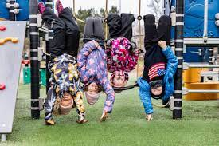

Eftermiddagsverksamhet

Vi erbjuder barnet meningsfull verksamhet efter skoldagens slut.
För verksamheten ansvarar utbildade ledare. Barnen får mellanmål
under eftermiddagen. Där har barn möjligheter till:
- Utforska höjder (klättra, klänga, hoppa, balansera).
- Uppleva hög fart (springa, gunga, glida, cykla, skejta)
- Utforska sina gränser för vad som är farligt (klätterväggar, eld, is, vatten).
- kämpa (tävla, fajtas, brottas).
- Testa att vara själv (gömma sig, dra sig undan) Eftermiddagsverksamhetens ordna i skolans lokaler eller i närheten.
Verksamheten börjar efter skoldagen slut och pågår senast till kl 16.